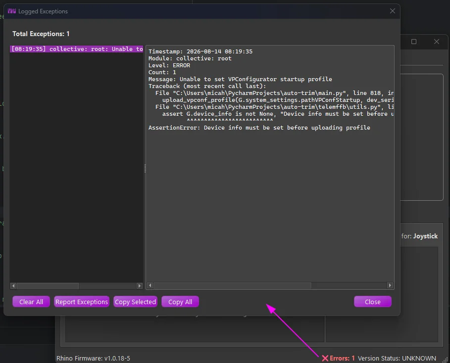
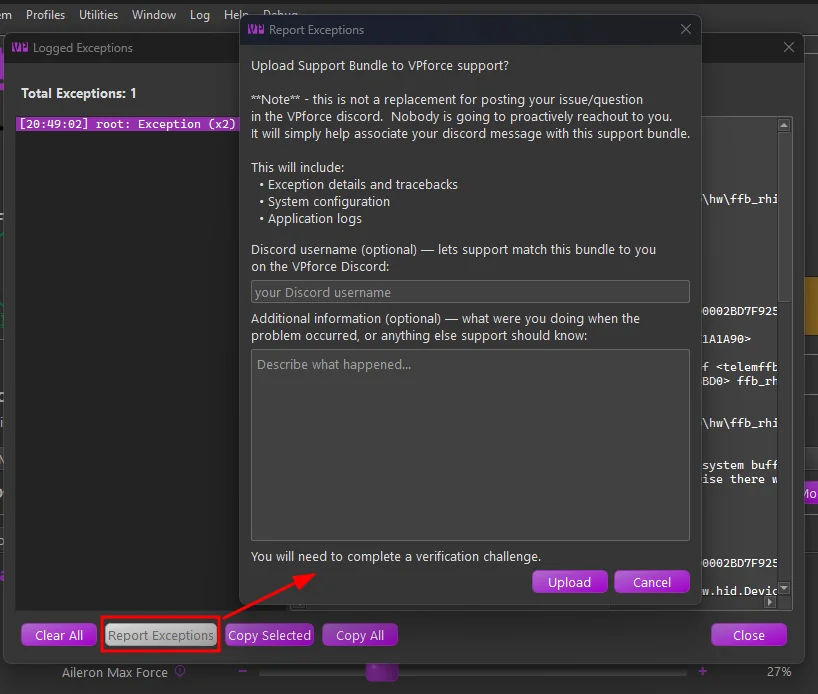

1. Troubleshooting & Getting Help¶
Most real-world problems are simulator connection issues, and the detailed checklists for those live in Game-Specific Troubleshooting. This page is the map: how to tell what kind of problem you have, where the diagnostics are, and how to get help.
1.1 Read the status area first¶
The main window’s status area narrows the problem immediately:
- Running - the sim is connected and telemetry is flowing. If something feels wrong, it is configuration, not connectivity; check the loaded settings via Current Aircraft, Matched Model, and Active Profile.
- Paused - telemetry stopped arriving, or the sim is paused.
- Error - a configuration problem. The error message shown alongside describes the condition and how to resolve it.
See Device/Instance Status Indications for details. The Monitor tab shows the raw telemetry and every active effect in real time, useful for confirming what TelemFFB is actually receiving and playing.
1.2 Simulator connection problems¶
Verify the sim is enabled in Connecting Your Simulator, then use the detailed per-sim checklists:
- DCS - FFB not working · Not receiving telemetry · Autopilot misbehaving
- MSFS - Axis flutter / controls not responding · A feature doesn’t work with a specific aircraft
- IL-2 - Not receiving telemetry
- X-Plane - Not receiving telemetry
- BMS - Falcon BMS
1.3 Exception Tracking & Reporting¶
TelemFFB tracks runtime errors as they happen. When an error is logged, a red Errors counter appears in the status bar along the bottom edge of the main window; it is hidden when there is nothing to see. Click it to open the Logged Exceptions viewer:

The left pane lists the errors from this session (up to 100); selecting one shows the full detail (timestamp, module, message, and complete traceback) in the right pane. Two behaviors keep the list readable:
- Deduplication - repeated occurrences of the same error collapse into a single entry with an occurrence count, rather than flooding the list.
- Child forwarding - in multi-device setups, errors raised by child instances are forwarded to the master, so every device’s errors are visible in one place. The module prefix on each entry tells you which instance raised it.
The buttons along the bottom: Copy Selected / Copy All put the error text on the clipboard (handy for pasting into a Discord post), Clear All empties the list and hides the status-bar counter, and Report Exceptions submits the errors to VPforce directly:

The dialog has two optional fields:
- Discord username - lets support match your uploaded bundle to you on the VPforce Discord. The name also becomes part of the uploaded file name, so it is visible right in the support channel. TelemFFB remembers it until you close the application; it is never saved to disk.
- Additional information - describe what you were doing when the problem occurred, or anything else support should know. Your notes travel inside the bundle, where support reads them before digging into the logs.
Report Exceptions builds a support bundle (the exception details and tracebacks, your system configuration, the application logs, and anything you entered above) and uploads it to VPforce support. After the upload, a verification page opens in your browser; the report is only submitted once you complete the challenge there.
1.4 Getting help¶
The single most important factor in getting your problem solved quickly is how you ask. Read How to Get Effective Support; it is short, and following it usually turns a multi-day back-and-forth into a single exchange. The essentials:
- Describe exactly what happens and when - “stick goes limp with no centering force in the F-16 after AP engage”, not “FFB doesn’t work”. One problem per request, and say what you have already tried.
- Include VPforce Configurator screenshots - Effects, Settings, and Debug tabs. Without them, diagnosis is guesswork.
- Attach a TelemFFB support bundle: Help → Create Support Bundle produces a timestamped zip of your logs, system settings, and user config; it usually contains everything needed for diagnosis.
- Post on the #TelemFFB-User channel of the VPforce Discord.
For reference: System → Open Config/Log directory opens the folder holding logs and your settings (%LOCALAPPDATA%\VPForce-TelemFFB); older logs are archived into daily zip files.
1.5 FAQ¶
Q: Does DCS native force feedback need TelemFFB running?
A: No. DCS sends its native FFB effects directly to the device. TelemFFB adds supplemental effects on top; see the DCS guide.
Q: My antivirus flags the TelemFFB executable. Is it safe?
A: This is a known false-positive pattern with PyInstaller-packaged applications. See TelemFFB and Antivirus Software.
Q: How do I update TelemFFB without losing my settings?
A: Extract the new version over (or beside) the old one. Your settings live in %LOCALAPPDATA%\VPForce-TelemFFB and the registry, not in the application folder, so they survive updates.
Q: Running from source and the release build: separate settings?
A: No, they share the same configuration. Changes made in one carry over to the other.